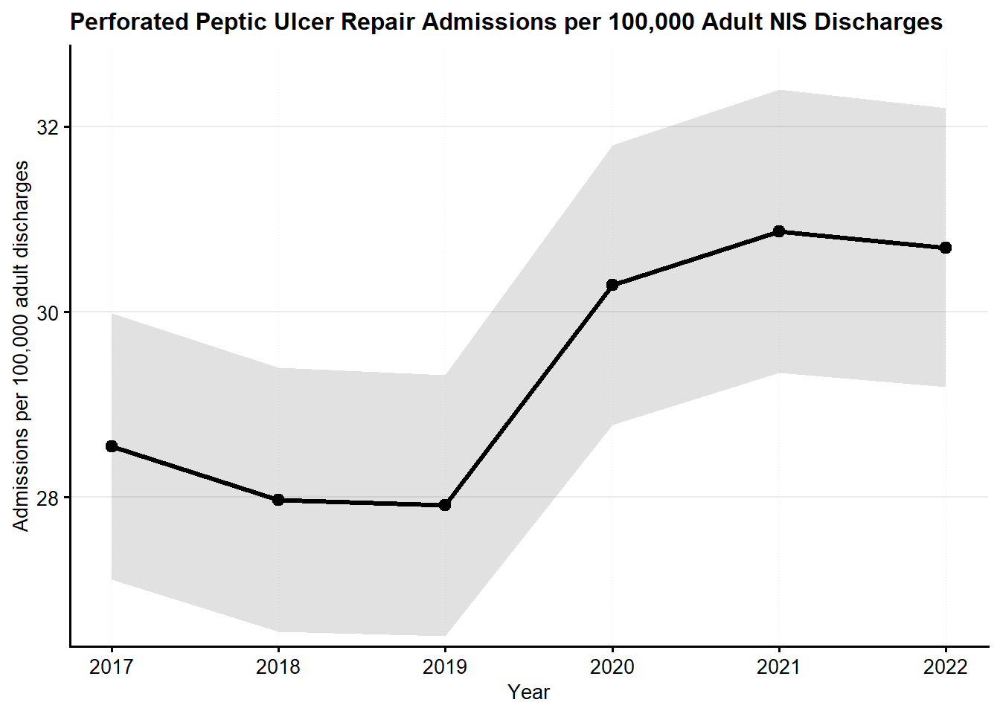
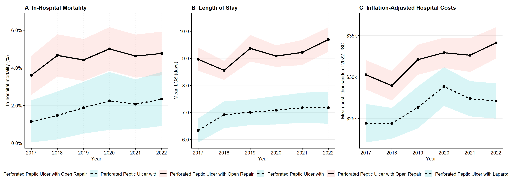

Laparoscopic Versus Open Repair of Perforated Peptic Ulcer in the United States, 2017–2022
NIS Analysis for Research Consultancy
Muhammad Umer Sohail ![]()
Preamble:
Reference Paper:
Study Objective: Assess national trends, patient characteristics, and inpatient outcomes among adults hospitalized with perforated peptic ulcer who underwent open or laparoscopic repair in the United States from 2017 to 2022.
Data Source: Cross-sectional analysis of the National Inpatient Sample (NIS) from 2017 to 2022.
Patient Selection: Included adult inpatient admissions aged ≥18 years with a principal diagnosis of perforated peptic ulcer and an ICD-10-PCS procedure code for open or laparoscopic repair of the stomach, pylorus, or duodenum. Perforated peptic ulcer was identified using ICD-10-CM diagnosis codes K25.1, K25.2, K25.5, K25.6, K26.1, K26.2, K26.5, K26.6, K27.1, K27.2, K27.5, and K27.6 in the primary diagnosis field. Open and laparoscopic repair were identified using ICD-10-PCS repair and supplement procedure codes.
Exclusions:
- Marginal/anastomotic ulcers
- Upper gastrointestinal malignancy
- Definitive ulcer surgery or resection
- Abdominal trauma
- Pregnancy
Primary Exposure:
- Operative approach: open repair versus laparoscopic repair
Outcomes:
- In-hospital mortality
- Length of stay
- Inflation-adjusted hospital cost, standardized to 2022 USD
- Acute kidney injury
- Postoperative ileus
Covariates:
Demographics: age, sex, race/ethnicity, median household income quartile by patient ZIP code, insurance status, and residence type.
Hospital characteristics: hospital region, hospital bed size, and hospital location/teaching status.
Comorbidities: Selected comorbid conditions including chronic kidney disease, congestive heart failure, iron deficiency anemia, diabetes mellitus, smoking/tobacco use, hypertension, alcohol abuse, atrial fibrillation, obesity, hyperlipidemia, and Charlson comorbidity index where available.
Statistical Analysis:
All analyses incorporated NIS discharge weights, strata, and clustering to account for the complex survey design.
Weighted national estimates were generated for adult perforated peptic ulcer repair admissions from 2017 to 2022.
Perforated peptic ulcer repair admission rates were calculated per 100,000 adult NIS discharges by year.
Baseline demographic, clinical, and hospital characteristics were summarized using survey-weighted descriptive statistics, stratified by operative approach.
Temporal trends in perforated peptic ulcer repair admissions were assessed across calendar years.
Outcomes were evaluated among admissions with perforated peptic ulcer repair. In-hospital mortality, acute kidney injury, and postoperative ileus were modeled using survey-weighted logistic regression. Length of stay and inflation-adjusted hospital cost were modeled using survey-weighted linear regression.
Multivariable models adjusted for operative approach, year, demographics, hospital characteristics, and relevant comorbidities. Results are reported as adjusted odds ratios for binary outcomes and beta coefficients for continuous outcomes, with 95% confidence intervals.
Hospital costs were estimated by multiplying total hospital charges by HCUP cost-to-charge ratios and were inflation-adjusted to 2022 USD.
Software: All analyses were performed using R Version 4.5.2 (R Foundation for Statistical Computing, Vienna, Austria)
Trends in perforated peptic ulcer repair admissions

Baseline Characteristics:
| Characteristic | Perforated Peptic Ulcer with Open Repair N = 39,8901 |
Perforated Peptic Ulcer with Laparoscopic Repair N = 11,4051 |
p-value2 | Overall N = 51,2951 |
|---|---|---|---|---|
| Age, y | 61 (17) | 58 (18) | <0.001 | 61 (17) |
| Race/ethnicity | <0.001 | |||
| White | 27,490 (70%) | 7,550 (69%) | 35,040 (70%) | |
| Asian or Pacific Islander | 1,140 (2.9%) | 560 (5.1%) | 1,700 (3.4%) | |
| Black | 6,335 (16%) | 1,365 (12%) | 7,700 (15%) | |
| Hispanic | 2,970 (7.6%) | 980 (8.9%) | 3,950 (7.9%) | |
| Other | 1,070 (2.7%) | 550 (5.0%) | 1,620 (3.2%) | |
| Sex | 0.004 | |||
| Male | 20,790 (52%) | 5,555 (49%) | 26,345 (51%) | |
| Female | 19,095 (48%) | 5,850 (51%) | 24,945 (49%) | |
| Median household income quartile | <0.001 | |||
| Q1 | 13,765 (35%) | 3,280 (29%) | 17,045 (34%) | |
| Q2 | 10,785 (28%) | 2,880 (26%) | 13,665 (27%) | |
| Q3 | 8,755 (22%) | 2,645 (24%) | 11,400 (23%) | |
| Q4 | 5,795 (15%) | 2,410 (21%) | 8,205 (16%) | |
| Expected primary payer | <0.001 | |||
| Medicaid | 7,385 (19%) | 2,090 (18%) | 9,475 (19%) | |
| Medicare | 18,060 (45%) | 4,475 (39%) | 22,535 (44%) | |
| Other | 5,705 (14%) | 1,730 (15%) | 7,435 (15%) | |
| Private | 8,665 (22%) | 3,090 (27%) | 11,755 (23%) | |
| Hospital region | <0.001 | |||
| Midwest | 8,775 (22%) | 2,445 (21%) | 11,220 (22%) | |
| Northeast | 5,695 (14%) | 1,850 (16%) | 7,545 (15%) | |
| South | 17,925 (45%) | 4,210 (37%) | 22,135 (43%) | |
| West | 7,495 (19%) | 2,900 (25%) | 10,395 (20%) | |
| Hospital location/teaching status | <0.001 | |||
| Urban, teaching | 26,760 (67%) | 7,875 (69%) | 34,635 (68%) | |
| Rural | 5,025 (13%) | 980 (8.6%) | 6,005 (12%) | |
| Urban, non-teaching | 8,105 (20%) | 2,550 (22%) | 10,655 (21%) | |
| Hospital bed size | 0.003 | |||
| Large | 18,885 (47%) | 4,960 (43%) | 23,845 (46%) | |
| Medium | 12,145 (30%) | 3,555 (31%) | 15,700 (31%) | |
| Small | 8,860 (22%) | 2,890 (25%) | 11,750 (23%) | |
| Charlson Comorbidity Index | 2.29 (1.81) | 2.02 (1.61) | <0.001 | 2.23 (1.77) |
| Chronic kidney disease | 4,375 (11%) | 965 (8.5%) | <0.001 | 5,340 (10%) |
| Congestive heart failure | 1,330 (3.3%) | 240 (2.1%) | 0.002 | 1,570 (3.1%) |
| Iron deficiency anemia | 1,660 (4.2%) | 425 (3.7%) | 0.3 | 2,085 (4.1%) |
| Diabetes mellitus | 6,305 (16%) | 1,700 (15%) | 0.3 | 8,005 (16%) |
| Smoking/tobacco use | 12,985 (33%) | 3,335 (29%) | 0.003 | 16,320 (32%) |
| Hypertension | 17,270 (43%) | 4,565 (40%) | 0.005 | 21,835 (43%) |
| Alcohol abuse | 5,255 (13%) | 1,255 (11%) | 0.005 | 6,510 (13%) |
| Atrial fibrillation/flutter | 4,990 (13%) | 940 (8.2%) | <0.001 | 5,930 (12%) |
| Obesity | 4,355 (11%) | 1,490 (13%) | 0.004 | 5,845 (11%) |
| Hyperlipidemia | 9,935 (25%) | 2,635 (23%) | 0.079 | 12,570 (25%) |
| 1 Mean (SD); n (%) | ||||
| 2 Design-based KruskalWallis test; Pearson’s X^2: Rao & Scott adjustment | ||||
Outcomes Table:
| Characteristic | Perforated Peptic Ulcer with Open Repair N = 39,8901 |
Perforated Peptic Ulcer with Laparoscopic Repair N = 11,4051 |
p-value2 | Overall N = 51,2951 |
|---|---|---|---|---|
| In-hospital mortality | 1,795 (4.5%) | 215 (1.9%) | <0.001 | 2,010 (3.9%) |
| Inflation-adjusted total cost ($) | 31,789 (33,663) | 26,490 (21,768) | <0.001 | 30,611 (31,486) |
| Length of stay, days | 9.1 (8.0) | 7.0 (5.3) | <0.001 | 8.7 (7.5) |
| Acute kidney injury | 9,390 (24%) | 1,990 (17%) | <0.001 | 11,380 (22%) |
| Postoperative ileus | 3,680 (9.2%) | 705 (6.2%) | <0.001 | 4,385 (8.5%) |
| 1 n (%); Mean (SD) | ||||
| 2 Pearson’s X^2: Rao & Scott adjustment; Design-based KruskalWallis test | ||||
Multivariable regression models:
Mortality:
| Characteristic | OR | 95% CI | p-value |
|---|---|---|---|
| Perforated Peptic Ulcer Categories | |||
| Perforated Peptic Ulcer with Open Repair | — | — | |
| Perforated Peptic Ulcer with Laparoscopic Repair | 0.47 | 0.34, 0.67 | <0.001 |
| Year | 1.04 | 0.98, 1.11 | 0.2 |
| Age, y | 1.05 | 1.04, 1.06 | <0.001 |
| Sex | |||
| Male | — | — | |
| Female | 0.92 | 0.73, 1.17 | 0.5 |
| Race/ethnicity | |||
| White | — | — | |
| Asian or Pacific Islander | 1.28 | 0.67, 2.45 | 0.4 |
| Black | 0.72 | 0.48, 1.09 | 0.12 |
| Hispanic | 0.95 | 0.61, 1.49 | 0.8 |
| Other | 0.61 | 0.26, 1.44 | 0.3 |
| Median household income quartile | |||
| Q1 | — | — | |
| Q2 | 1.09 | 0.82, 1.44 | 0.5 |
| Q3 | 0.97 | 0.70, 1.33 | 0.8 |
| Q4 | 0.80 | 0.55, 1.16 | 0.2 |
| Expected primary payer | |||
| Medicaid | — | — | |
| Medicare | 0.94 | 0.58, 1.52 | 0.8 |
| Other | 1.07 | 0.62, 1.84 | 0.8 |
| Private | 1.19 | 0.75, 1.89 | 0.5 |
| Hospital region | |||
| Midwest | — | — | |
| Northeast | 1.14 | 0.80, 1.62 | 0.5 |
| South | 1.00 | 0.75, 1.35 | >0.9 |
| West | 0.81 | 0.56, 1.17 | 0.3 |
| Hospital bed size | |||
| Large | — | — | |
| Medium | 0.99 | 0.77, 1.26 | >0.9 |
| Small | 0.85 | 0.63, 1.14 | 0.3 |
| Residence | |||
| Large metro | — | — | |
| Micropolitan | 0.97 | 0.66, 1.42 | 0.9 |
| Small metro | 1.01 | 0.77, 1.32 | >0.9 |
| Hospital location/teaching status | |||
| Urban, teaching | — | — | |
| Rural | 0.92 | 0.60, 1.42 | 0.7 |
| Urban, non-teaching | 0.82 | 0.61, 1.09 | 0.2 |
| Chronic kidney disease | |||
| No | — | — | |
| Yes | 0.50 | 0.35, 0.72 | <0.001 |
| Congestive heart failure | |||
| No | — | — | |
| Yes | 1.71 | 1.15, 2.52 | 0.007 |
| Iron deficiency anemia | |||
| No | — | — | |
| Yes | 1.19 | 0.73, 1.92 | 0.5 |
| Diabetes mellitus | |||
| No | — | — | |
| Yes | 0.96 | 0.71, 1.28 | 0.8 |
| Smoking/tobacco use | |||
| No | — | — | |
| Yes | 0.57 | 0.41, 0.79 | <0.001 |
| Hypertension | |||
| No | — | — | |
| Yes | 0.50 | 0.38, 0.65 | <0.001 |
| Alcohol abuse | |||
| No | — | — | |
| Yes | 1.57 | 1.11, 2.24 | 0.011 |
| Atrial fibrillation/flutter | |||
| No | — | — | |
| Yes | 1.94 | 1.48, 2.54 | <0.001 |
| Obesity | |||
| No | — | — | |
| Yes | 0.90 | 0.63, 1.28 | 0.5 |
| Hyperlipidemia | |||
| No | — | — | |
| Yes | 0.68 | 0.52, 0.89 | 0.004 |
| Charlson comorbidity index | 1.33 | 1.26, 1.40 | <0.001 |
| Abbreviations: CI = Confidence Interval, OR = Odds Ratio | |||
Length of stay:
| Characteristic | Beta | 95% CI | p-value |
|---|---|---|---|
| Perforated Peptic Ulcer Categories | |||
| Perforated Peptic Ulcer with Open Repair | — | — | |
| Perforated Peptic Ulcer with Laparoscopic Repair | -1.7 | -2.0, -1.4 | <0.001 |
| Year | 0.11 | 0.03, 0.20 | 0.009 |
| Age, y | 0.05 | 0.04, 0.06 | <0.001 |
| Sex | |||
| Male | — | — | |
| Female | 0.21 | -0.12, 0.53 | 0.2 |
| Race/ethnicity | |||
| White | — | — | |
| Asian or Pacific Islander | -0.24 | -0.91, 0.43 | 0.5 |
| Black | 0.23 | -0.26, 0.72 | 0.4 |
| Hispanic | -0.32 | -0.83, 0.18 | 0.2 |
| Other | 0.80 | -0.22, 1.8 | 0.12 |
| Median household income quartile | |||
| Q1 | — | — | |
| Q2 | -0.10 | -0.45, 0.25 | 0.6 |
| Q3 | -0.11 | -0.54, 0.31 | 0.6 |
| Q4 | -0.37 | -0.84, 0.11 | 0.13 |
| Expected primary payer | |||
| Medicaid | — | — | |
| Medicare | -0.48 | -1.2, 0.19 | 0.2 |
| Other | -0.87 | -1.4, -0.35 | 0.001 |
| Private | -0.80 | -1.3, -0.28 | 0.002 |
| Hospital region | |||
| Midwest | — | — | |
| Northeast | 0.74 | 0.23, 1.2 | 0.004 |
| South | 0.64 | 0.30, 0.98 | <0.001 |
| West | 0.39 | -0.04, 0.82 | 0.075 |
| Hospital bed size | |||
| Large | — | — | |
| Medium | -0.70 | -1.0, -0.36 | <0.001 |
| Small | -1.0 | -1.4, -0.69 | <0.001 |
| Residence | |||
| Large metro | — | — | |
| Micropolitan | -0.16 | -0.67, 0.34 | 0.5 |
| Small metro | -0.20 | -0.55, 0.15 | 0.3 |
| Hospital location/teaching status | |||
| Urban, teaching | — | — | |
| Rural | -1.5 | -2.0, -1.1 | <0.001 |
| Urban, non-teaching | -0.66 | -1.0, -0.30 | <0.001 |
| Chronic kidney disease | |||
| No | — | — | |
| Yes | -0.51 | -1.5, 0.47 | 0.3 |
| Congestive heart failure | |||
| No | — | — | |
| Yes | 3.5 | 2.4, 4.6 | <0.001 |
| Iron deficiency anemia | |||
| No | — | — | |
| Yes | 1.2 | 0.35, 2.1 | 0.006 |
| Diabetes mellitus | |||
| No | — | — | |
| Yes | 0.13 | -0.48, 0.73 | 0.7 |
| Smoking/tobacco use | |||
| No | — | — | |
| Yes | -0.52 | -0.83, -0.21 | 0.001 |
| Hypertension | |||
| No | — | — | |
| Yes | -0.17 | -0.52, 0.19 | 0.4 |
| Alcohol abuse | |||
| No | — | — | |
| Yes | 1.4 | 0.96, 1.9 | <0.001 |
| Atrial fibrillation/flutter | |||
| No | — | — | |
| Yes | 1.6 | 1.0, 2.2 | <0.001 |
| Obesity | |||
| No | — | — | |
| Yes | 0.76 | 0.30, 1.2 | 0.001 |
| Hyperlipidemia | |||
| No | — | — | |
| Yes | -0.53 | -0.93, -0.13 | 0.009 |
| Charlson comorbidity index | 0.68 | 0.46, 0.91 | <0.001 |
| Abbreviation: CI = Confidence Interval | |||
Inflation adjusted cost:
| Characteristic | Beta | 95% CI | p-value |
|---|---|---|---|
| Perforated Peptic Ulcer Categories | |||
| Perforated Peptic Ulcer with Open Repair | — | — | |
| Perforated Peptic Ulcer with Laparoscopic Repair | -4,571 | -5,729, -3,413 | <0.001 |
| Year | 750 | 401, 1,100 | <0.001 |
| Age, y | 120 | 65, 175 | <0.001 |
| Sex | |||
| Male | — | — | |
| Female | -560 | -1,858, 737 | 0.4 |
| Race/ethnicity | |||
| White | — | — | |
| Asian or Pacific Islander | 219 | -2,867, 3,305 | 0.9 |
| Black | 459 | -1,302, 2,221 | 0.6 |
| Hispanic | -993 | -3,166, 1,180 | 0.4 |
| Other | 5,473 | 160, 10,786 | 0.044 |
| Median household income quartile | |||
| Q1 | — | — | |
| Q2 | 328 | -1,051, 1,707 | 0.6 |
| Q3 | 54 | -1,624, 1,731 | >0.9 |
| Q4 | 861 | -1,229, 2,952 | 0.4 |
| Expected primary payer | |||
| Medicaid | — | — | |
| Medicare | -307 | -2,828, 2,214 | 0.8 |
| Other | -2,321 | -4,148, -494 | 0.013 |
| Private | -1,339 | -3,338, 661 | 0.2 |
| Hospital region | |||
| Midwest | — | — | |
| Northeast | 3,172 | 1,060, 5,285 | 0.003 |
| South | -1,109 | -2,475, 256 | 0.11 |
| West | 10,226 | 8,033, 12,420 | <0.001 |
| Hospital bed size | |||
| Large | — | — | |
| Medium | -1,186 | -2,583, 212 | 0.10 |
| Small | -1,371 | -2,830, 89 | 0.066 |
| Residence | |||
| Large metro | — | — | |
| Micropolitan | -1,547 | -3,585, 492 | 0.14 |
| Small metro | -2,722 | -4,078, -1,366 | <0.001 |
| Hospital location/teaching status | |||
| Urban, teaching | — | — | |
| Rural | -146 | -2,242, 1,951 | 0.9 |
| Urban, non-teaching | -2,151 | -3,488, -814 | 0.002 |
| Chronic kidney disease | |||
| No | — | — | |
| Yes | -2,024 | -5,853, 1,806 | 0.3 |
| Congestive heart failure | |||
| No | — | — | |
| Yes | 15,297 | 9,357, 21,238 | <0.001 |
| Iron deficiency anemia | |||
| No | — | — | |
| Yes | 6,010 | 2,019, 10,001 | 0.003 |
| Diabetes mellitus | |||
| No | — | — | |
| Yes | 326 | -1,925, 2,576 | 0.8 |
| Smoking/tobacco use | |||
| No | — | — | |
| Yes | -1,869 | -3,081, -657 | 0.003 |
| Hypertension | |||
| No | — | — | |
| Yes | -930 | -2,345, 485 | 0.2 |
| Alcohol abuse | |||
| No | — | — | |
| Yes | 5,218 | 3,488, 6,948 | <0.001 |
| Atrial fibrillation/flutter | |||
| No | — | — | |
| Yes | 7,631 | 5,119, 10,143 | <0.001 |
| Obesity | |||
| No | — | — | |
| Yes | 3,785 | 1,865, 5,704 | <0.001 |
| Hyperlipidemia | |||
| No | — | — | |
| Yes | -2,889 | -4,499, -1,280 | <0.001 |
| Charlson comorbidity index | 3,322 | 2,571, 4,073 | <0.001 |
| Abbreviation: CI = Confidence Interval | |||
Acute kidney injury:
| Characteristic | OR | 95% CI | p-value |
|---|---|---|---|
| Perforated Peptic Ulcer Categories | |||
| Perforated Peptic Ulcer with Open Repair | — | — | |
| Perforated Peptic Ulcer with Laparoscopic Repair | 0.79 | 0.69, 0.90 | <0.001 |
| Year | 1.06 | 1.03, 1.09 | <0.001 |
| Age, y | 1.03 | 1.03, 1.04 | <0.001 |
| Sex | |||
| Male | — | — | |
| Female | 0.73 | 0.65, 0.82 | <0.001 |
| Race/ethnicity | |||
| White | — | — | |
| Asian or Pacific Islander | 0.80 | 0.58, 1.10 | 0.2 |
| Black | 1.19 | 1.00, 1.40 | 0.044 |
| Hispanic | 0.88 | 0.71, 1.09 | 0.2 |
| Other | 1.12 | 0.82, 1.53 | 0.5 |
| Median household income quartile | |||
| Q1 | — | — | |
| Q2 | 0.89 | 0.77, 1.02 | 0.11 |
| Q3 | 0.99 | 0.85, 1.16 | >0.9 |
| Q4 | 0.97 | 0.81, 1.16 | 0.7 |
| Expected primary payer | |||
| Medicaid | — | — | |
| Medicare | 0.81 | 0.66, 0.99 | 0.037 |
| Other | 0.73 | 0.59, 0.91 | 0.005 |
| Private | 0.80 | 0.66, 0.96 | 0.017 |
| Hospital region | |||
| Midwest | — | — | |
| Northeast | 1.03 | 0.85, 1.24 | 0.8 |
| South | 1.14 | 0.99, 1.32 | 0.066 |
| West | 0.95 | 0.80, 1.14 | 0.6 |
| Hospital bed size | |||
| Large | — | — | |
| Medium | 1.03 | 0.91, 1.17 | 0.6 |
| Small | 0.95 | 0.82, 1.09 | 0.4 |
| Residence | |||
| Large metro | — | — | |
| Micropolitan | 0.94 | 0.77, 1.14 | 0.5 |
| Small metro | 0.99 | 0.87, 1.13 | 0.9 |
| Hospital location/teaching status | |||
| Urban, teaching | — | — | |
| Rural | 0.77 | 0.61, 0.97 | 0.027 |
| Urban, non-teaching | 0.86 | 0.75, 0.98 | 0.028 |
| Chronic kidney disease | |||
| No | — | — | |
| Yes | 3.43 | 2.82, 4.18 | <0.001 |
| Congestive heart failure | |||
| No | — | — | |
| Yes | 1.90 | 1.44, 2.51 | <0.001 |
| Iron deficiency anemia | |||
| No | — | — | |
| Yes | 1.47 | 1.15, 1.87 | 0.002 |
| Diabetes mellitus | |||
| No | — | — | |
| Yes | 1.32 | 1.13, 1.53 | <0.001 |
| Smoking/tobacco use | |||
| No | — | — | |
| Yes | 0.85 | 0.75, 0.96 | 0.012 |
| Hypertension | |||
| No | — | — | |
| Yes | 1.20 | 1.05, 1.37 | 0.006 |
| Alcohol abuse | |||
| No | — | — | |
| Yes | 1.32 | 1.13, 1.56 | <0.001 |
| Atrial fibrillation/flutter | |||
| No | — | — | |
| Yes | 1.16 | 0.99, 1.36 | 0.069 |
| Obesity | |||
| No | — | — | |
| Yes | 1.29 | 1.10, 1.52 | 0.002 |
| Hyperlipidemia | |||
| No | — | — | |
| Yes | 0.86 | 0.75, 0.98 | 0.021 |
| Charlson comorbidity index | 1.12 | 1.08, 1.17 | <0.001 |
| Abbreviations: CI = Confidence Interval, OR = Odds Ratio | |||
Postoperative ileus:
| Characteristic | OR | 95% CI | p-value |
|---|---|---|---|
| Perforated Peptic Ulcer Categories | |||
| Perforated Peptic Ulcer with Open Repair | — | — | |
| Perforated Peptic Ulcer with Laparoscopic Repair | 0.65 | 0.53, 0.80 | <0.001 |
| Year | 1.02 | 0.98, 1.07 | 0.3 |
| Age, y | 1.01 | 1.00, 1.02 | 0.006 |
| Sex | |||
| Male | — | — | |
| Female | 0.92 | 0.79, 1.08 | 0.3 |
| Race/ethnicity | |||
| White | — | — | |
| Asian or Pacific Islander | 0.91 | 0.60, 1.37 | 0.6 |
| Black | 1.41 | 1.14, 1.74 | 0.002 |
| Hispanic | 0.74 | 0.54, 1.01 | 0.056 |
| Other | 0.61 | 0.36, 1.05 | 0.077 |
| Median household income quartile | |||
| Q1 | — | — | |
| Q2 | 0.92 | 0.76, 1.11 | 0.4 |
| Q3 | 0.89 | 0.71, 1.10 | 0.3 |
| Q4 | 0.92 | 0.72, 1.18 | 0.5 |
| Expected primary payer | |||
| Medicaid | — | — | |
| Medicare | 1.00 | 0.76, 1.31 | >0.9 |
| Other | 1.07 | 0.82, 1.40 | 0.6 |
| Private | 1.13 | 0.88, 1.45 | 0.3 |
| Hospital region | |||
| Midwest | — | — | |
| Northeast | 0.85 | 0.66, 1.11 | 0.2 |
| South | 1.01 | 0.83, 1.23 | >0.9 |
| West | 1.48 | 1.18, 1.86 | <0.001 |
| Hospital bed size | |||
| Large | — | — | |
| Medium | 1.26 | 1.06, 1.49 | 0.009 |
| Small | 1.29 | 1.06, 1.55 | 0.009 |
| Residence | |||
| Large metro | — | — | |
| Micropolitan | 0.74 | 0.55, 1.01 | 0.055 |
| Small metro | 0.92 | 0.77, 1.09 | 0.3 |
| Hospital location/teaching status | |||
| Urban, teaching | — | — | |
| Rural | 1.36 | 0.97, 1.90 | 0.074 |
| Urban, non-teaching | 1.31 | 1.10, 1.56 | 0.003 |
| Chronic kidney disease | |||
| No | — | — | |
| Yes | 1.15 | 0.85, 1.56 | 0.4 |
| Congestive heart failure | |||
| No | — | — | |
| Yes | 1.19 | 0.81, 1.74 | 0.4 |
| Iron deficiency anemia | |||
| No | — | — | |
| Yes | 0.98 | 0.69, 1.39 | 0.9 |
| Diabetes mellitus | |||
| No | — | — | |
| Yes | 1.08 | 0.87, 1.34 | 0.5 |
| Smoking/tobacco use | |||
| No | — | — | |
| Yes | 1.00 | 0.84, 1.19 | >0.9 |
| Hypertension | |||
| No | — | — | |
| Yes | 1.09 | 0.92, 1.30 | 0.3 |
| Alcohol abuse | |||
| No | — | — | |
| Yes | 1.44 | 1.18, 1.77 | <0.001 |
| Atrial fibrillation/flutter | |||
| No | — | — | |
| Yes | 1.03 | 0.82, 1.30 | 0.8 |
| Obesity | |||
| No | — | — | |
| Yes | 0.99 | 0.78, 1.25 | >0.9 |
| Hyperlipidemia | |||
| No | — | — | |
| Yes | 0.96 | 0.80, 1.15 | 0.7 |
| Charlson comorbidity index | 1.02 | 0.96, 1.08 | 0.5 |
| Abbreviations: CI = Confidence Interval, OR = Odds Ratio | |||